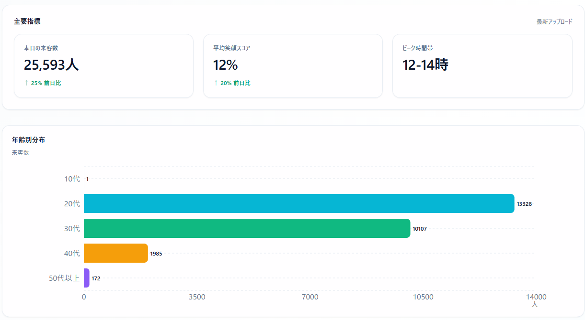
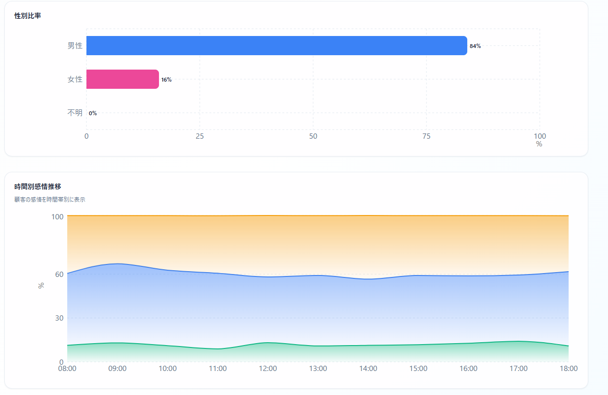
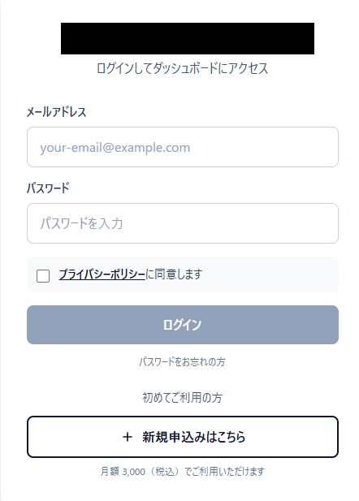
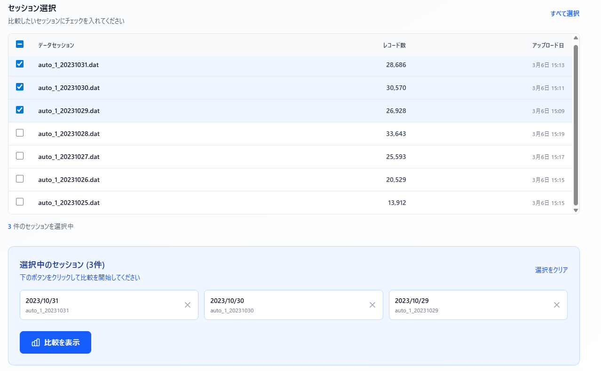
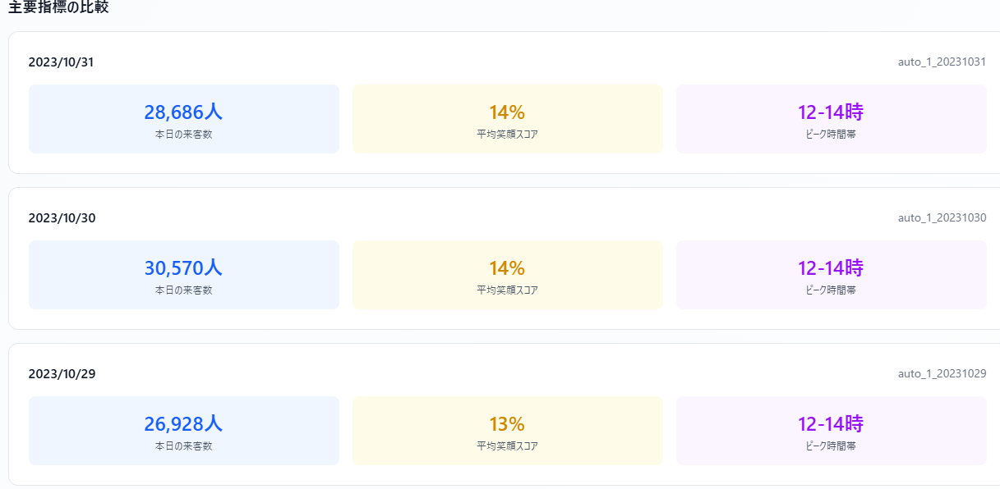
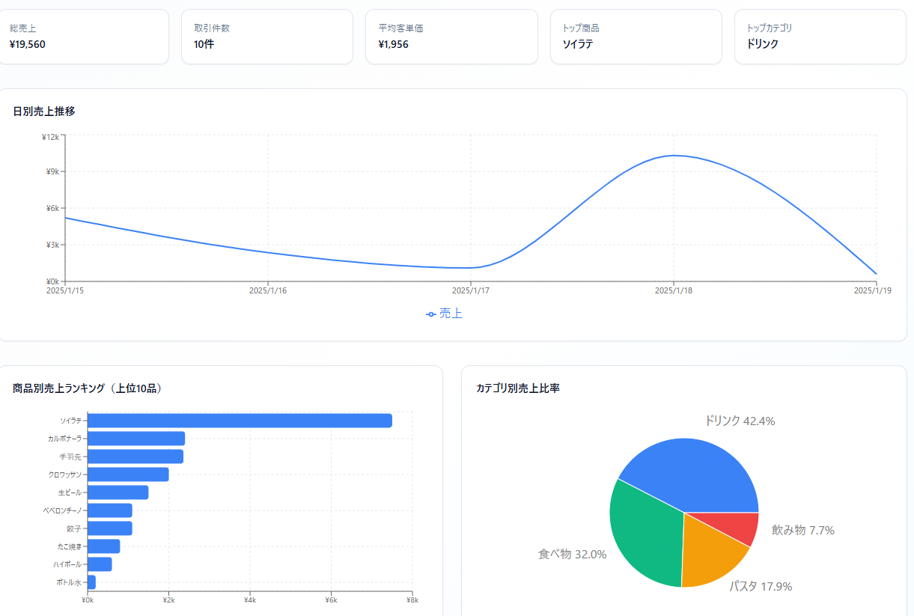
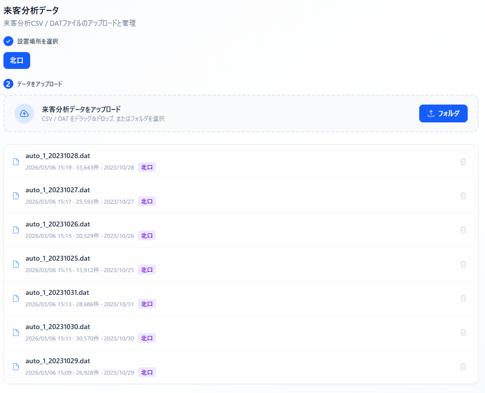
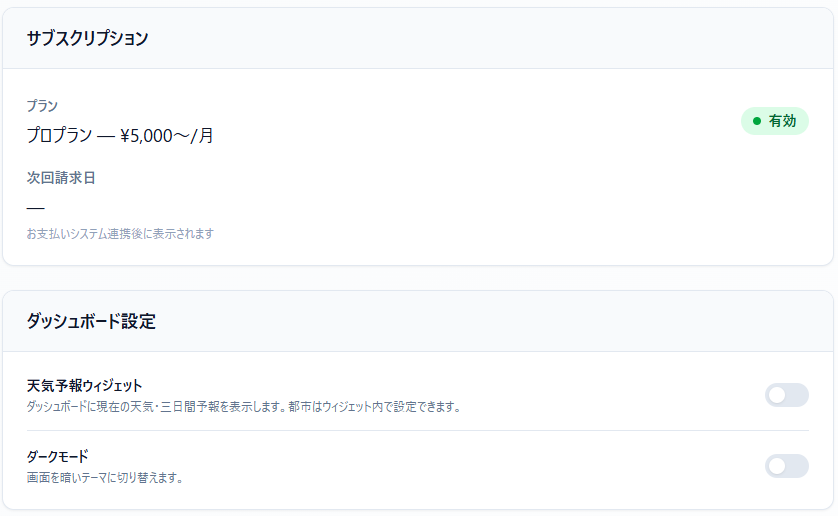
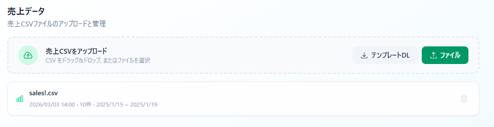
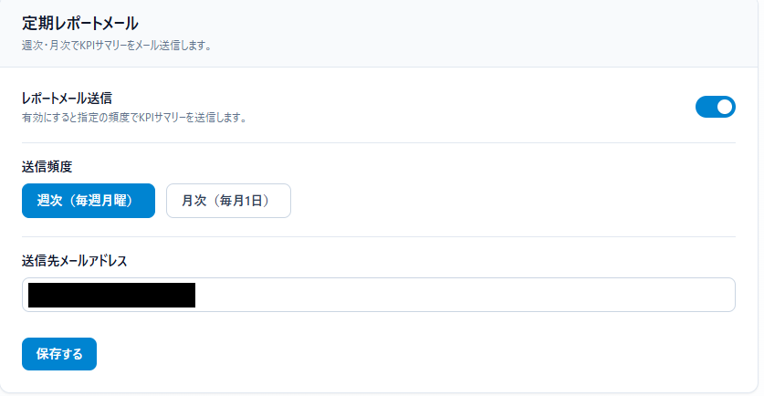

Portfolio / B2B SaaS / 2026
B2B SaaS analytics platform for edge AI camera data — solo-built, production-deployed on AWS
エッジAIカメラデータのB2B SaaS分析基盤 — ソロ開発・AWS本番運用中
01 · Problem & Context背景と課題
A restaurant chain in Japan deployed edge AI cameras with face detection at multiple locations — capturing visitor demographics (age, gender) and emotional responses in real time. But the data sat in raw DAT files on local machines. No centralized dashboard, no trend analysis, no cross-location comparison. Each location generated hundreds of records daily with zero visibility upstream. The company needed a multi-tenant SaaS platform that could ingest this IoT data, produce actionable analytics, and scale across locations — built and maintained by a single developer within a constrained timeline.
国内の飲食チェーンが複数店舗にエッジAIカメラ（顔検出）を設置し、来客の属性（年齢・性別）と感情反応をリアルタイムに取得していた。しかしデータはローカルのDATファイルに留まり、一元的なダッシュボード・トレンド分析・拠点間比較は存在しなかった。各拠点が日々数百件のレコードを生成しても、上流への可視性はゼロ。IoTデータを取り込み、実用的な分析を提供し、拠点横断でスケールするマルチテナントSaaSを、一人の開発者が限られた期間内に構築・運用する必要があった。
02 · Architectureアーキテクチャ
A monolithic Next.js application deployed on AWS App Runner. Frontend, API routes, and background jobs share one codebase, one build artifact, and one health check. This eliminates cross-service coordination overhead for a solo-maintained production system.
AWS App Runner上にデプロイしたモノリシックNext.jsアプリケーション。フロントエンド・APIルート・バックグラウンドジョブが1つのコードベース・1つのビルド成果物・1つのヘルスチェックを共有。ソロ運用の本番システムでサービス間の調整オーバーヘッドを排除。
Frontend + Server
フロントエンド + サーバー
Next.js 16 + TypeScript strict + Tailwind CSS v4
Full-stack deployment on AWS App Runner (Node.js 22). Client components for dashboards, API routes for server logic. Shared types between layers.
AWS App Runner上のフルスタックデプロイ（Node.js 22）。ダッシュボード用クライアントコンポーネント、サーバーロジック用APIルート。レイヤー間で型を共有。
API Layer
APIレイヤー
Next.js API Routes + JWT Middleware
RESTful endpoints with httpOnly cookie auth. Parameterized SQL queries. Rate limiting per endpoint. SSE streaming for real-time data.
httpOnlyクッキー認証のRESTfulエンドポイント。パラメータ化SQLクエリ。エンドポイント別レート制限。リアルタイムデータ用SSEストリーミング。
Database
データベース
PostgreSQL (AWS RDS)
7 tables with Row-Level Security enforced via session variables. Parameterized queries only — no ORM, no string concatenation.
セッション変数によるRow-Level Securityを適用した7テーブル。パラメータ化クエリのみ — ORM不使用、文字列結合なし。
Why full-stack Next.js on App Runner instead of separate frontend and backend?
フロントとバックを分離せず、App Runner上のフルスタックNext.jsにした理由
One deployment unit means one build artifact, one health check, one set of environment variables, and shared TypeScript types between client and server. For a solo-maintained B2B SaaS, this tradeoff is a strict win: simpler deployment, simpler debugging, zero cross-service latency. App Runner handles auto-scaling and TLS termination — no ECS task definitions or ALB configuration required.
1つのデプロイ単位にまとめることで、ビルド成果物・ヘルスチェック・環境変数がすべて1つになり、クライアントとサーバー間でTypeScript型を共有できる。ソロ運用のB2B SaaSでは、デプロイ・デバッグの簡素化とサービス間レイテンシゼロのトレードオフが明確に有利。App Runnerがオートスケーリングとtls終端を処理し、ECSタスク定義やALB設定が不要。
AWS Services Used
使用AWSサービス
03 · Screenshotsスクリーンショット
Actual screenshots from the production deployment. Sensitive data has been redacted.
本番環境の実際のスクリーンショット。機密データは墨消し済み。

Dashboard — KPI cards (visitors, smile score, peak hours) and age distribution chart
ダッシュボード — KPIカード（来客数・笑顔スコア・ピーク時間帯）と年齢分布チャート

Analytics — Gender ratio and hourly emotion trends
分析 — 性別比率と時間帯別感情推移

Login — Email auth with privacy consent and pricing
ログイン — メール認証・プライバシー同意・料金表示

Session selection — Multi-session picker for comparison
セッション選択 — 比較用マルチセッションピッカー

Comparison — Side-by-side KPI cards across dates
比較 — 日付横断のKPIカード並列表示

Sales POS — Revenue KPIs, daily trend, product ranking, and category breakdown
売上POS — 売上KPI・日別推移・商品ランキング・カテゴリ別内訳

Data management — DAT file upload with location filtering
データ管理 — 設置場所別DATファイルアップロード

Settings — Subscription plan and dashboard preferences
設定 — サブスクリプションプランとダッシュボード設定

Sales upload — CSV import with template download
売上アップロード — テンプレート付きCSVインポート

Email reports — Weekly/monthly KPI delivery settings
メールレポート — 週次・月次KPI配信設定
04 · Features機能一覧
05 · Code Showcaseコードハイライト
Representative patterns from the codebase. Variable names and structure simplified; proprietary implementation details omitted.
コードベースからの代表的なパターン。変数名や構造を簡略化し、実装の詳細は省略。
Every tenant-scoped query sets a PostgreSQL session variable via set_config, wrapped in a transaction. RLS policies use this variable to filter rows — the application cannot bypass isolation even if a bug omits a WHERE clause.
テナントスコープの全クエリがset_configでPostgreSQLセッション変数を設定し、トランザクションで囲む。RLSポリシーがこの変数で行をフィルタし、WHERE句の漏れがあってもアプリケーション側から分離をバイパスできない。
export async function queryAsUser<T>( email: string, sql: string, params?: unknown[] ): Promise<QueryResult<T>> { const client = await pool.connect() try { await client.query('BEGIN') await client.query( `SELECT set_config('app.current_user_email', $1, true)`, [email] ) const result = await client.query<T>(sql, params) await client.query('COMMIT') return result } catch (err) { await client.query('ROLLBACK') throw err } finally { client.release() } } // Admin bypass: no session variable, no RLS filtering export async function queryAsAdmin<T>( sql: string, params?: unknown[] ): Promise<QueryResult<T>> { return pool.query<T>(sql, params) }
Raw camera output flows through a staged pipeline: parse line format, normalize emotion scores into three categories, then fan out to six independent aggregators. Each aggregator is a pure function with a single concern — testable in isolation.
カメラの生出力が段階的パイプラインを通過：行フォーマット解析、感情スコアの3カテゴリ正規化、6つの独立した集計器にファンアウト。各集計器は単一責務の純粋関数で、単体テスト可能。
export function processRecords(lines: string[]): ProcessedData { // Stage 1: Parse raw DAT format into typed records const parsed = lines.map(parseRawLine) // Stage 2: Normalize five emotion rates into three categories // happy -> satisfied, neutral+surprise -> neutral, sad+anger -> dissatisfied const normalized = parsed.map(normalizeEmotion) // Stage 3: Fan out to independent aggregators return { kpiStats: formatKPIs(aggregateKPIs(parsed)), ageDistribution: aggregateAgeDistribution(parsed), genderRatio: aggregateGenderRatio(parsed), emotionTrends: aggregateEmotionTrends(normalized), timeProfiles: aggregateTimeProfiles(parsed), } }
Billboard-scoped subscriber map persisted across hot reloads via global state. When a device pushes new data, the server encodes a JSON payload and enqueues it to every connected client for that billboard. Failed enqueues (disconnected clients) are cleaned up immediately.
グローバル状態でホットリロード間も保持される拠点別サブスクライバマップ。デバイスが新データをプッシュすると、サーバーがJSONペイロードをエンコードし、該当拠点の全接続クライアントにエンキュー。エンキュー失敗（切断クライアント）は即時クリーンアップ。
type Controller = ReadableStreamDefaultController<Uint8Array> const subscribers: Map<number, Set<Controller>> = new Map() export function broadcast( billboardId: number, payload: Record<string, unknown> ): void { const subs = subscribers.get(billboardId) if (!subs || subs.size === 0) return const encoded = new TextEncoder().encode( `data: ${JSON.stringify(payload)}\n\n` ) for (const ctrl of subs) { try { ctrl.enqueue(encoded) } catch { subs.delete(ctrl) // client disconnected } } if (subs.size === 0) subscribers.delete(billboardId) }
Flags upload sessions with record counts that deviate significantly from the rolling mean. Groups by location to prevent cross-billboard noise. Requires a minimum baseline of prior sessions before flagging — avoids false positives on new locations.
ローリング平均からレコード数が大きく逸脱するアップロードセッションをフラグ。拠点別にグループ化してノイズを排除。新規拠点での誤検知を防ぐため、最小ベースライン数の過去セッションを要求。
const THRESHOLD = 0.4 const MIN_BASELINE = 3 const WINDOW = 10 export function detectAnomalies( sessions: SessionEntry[], threshold = THRESHOLD ): Set<number> { const anomalous = new Set<number>() // Group sessions by location to prevent cross-billboard noise const groups = groupByLocation(sessions) for (const group of groups.values()) { const sorted = sortByDate(group) for (let i = 0; i < sorted.length; i++) { const prior = sorted.slice( Math.max(0, i - WINDOW), i ) if (prior.length < MIN_BASELINE) continue const mean = average(prior.map(s => s.recordCount)) if (mean === 0) continue const deviation = Math.abs(sorted[i].recordCount - mean) / mean if (deviation > threshold) { anomalous.add(sorted[i].id) } } } return anomalous }
Sliding-window counter keyed by action + identifier (e.g., login:IP). Expired entries auto-pruned every 5 minutes to prevent memory leaks. Returns typed result with retryAfter for HTTP 429 responses. No external dependencies — appropriate for a single-instance deployment.
アクション+識別子（例：login:IP）をキーとするスライディングウィンドウカウンタ。メモリリーク防止のため期限切れエントリを5分毎に自動削除。HTTP 429レスポンス用にretryAfter付きの型付き結果を返却。外部依存なし — シングルインスタンスデプロイに適合。
interface Entry { count: number; resetAt: number } const store = new Map<string, Entry>() // Auto-prune expired entries every 5 minutes setInterval(() => { const now = Date.now() for (const [key, entry] of store) { if (entry.resetAt <= now) store.delete(key) } }, 5 * 60 * 1000) export interface RateLimitResult { limited: boolean retryAfter: number } export function checkRate( key: string, max: number, windowMs: number ): RateLimitResult { const now = Date.now() let entry = store.get(key) if (!entry || entry.resetAt <= now) { store.set(key, { count: 1, resetAt: now + windowMs }) return { limited: false, retryAfter: 0 } } entry.count += 1 if (entry.count > max) { return { limited: true, retryAfter: Math.ceil( (entry.resetAt - now) / 1000 ), } } return { limited: false, retryAfter: 0 } }
06 · AI IntegrationAI活用
AI coding assistants were used as a review and acceleration tool throughout development — the same way an engineer would consult a senior colleague.
AI活用は開発全体を通じたレビュー・加速ツールとして — エンジニアがシニアの同僚に相談するのと同じ形で使用した。
Use Case 1
活用 1
Architecture Review
アーキテクチャレビュー
Evaluated trade-offs on key design decisions: RLS via session variables vs. application-level WHERE clauses, JWT cookie strategy vs. token-in-header, server-side vs. client-side aggregation for chart data. AI surfaced edge cases and alternative approaches — the developer made all final decisions.
主要設計のトレードオフを評価：セッション変数RLS vs アプリケーションレベルWHERE句、JWTクッキー戦略 vs ヘッダー内トークン、サーバーサイドvs クライアントサイド集計。AIがエッジケースと代替案を提示 — 最終判断はすべて開発者が実施。
Use Case 2
活用 2
Code Review & Edge Case Detection
コードレビュー・エッジケース検出
Reviewed security patterns (parameterized queries, rate limiting logic, cookie flags), parser edge cases (malformed DAT lines, encoding issues), and SQL query optimization (batch insert via UNNEST vs. multi-row VALUES). Caught issues that would otherwise surface only in production.
セキュリティパターン（パラメータ化クエリ・レート制限ロジック・クッキーフラグ）、パーサーのエッジケース（不正DAT行・エンコーディング問題）、SQLクエリ最適化（UNNEST vs 複数行VALUES）をレビュー。本番でしか発見できない問題を事前に検出。
On AI-Assisted Development
AI支援開発について
AI coding assistants accelerated review cycles and caught edge cases earlier in the development process. All architectural decisions, database schema design, algorithm selection, and production deployment choices were made by the developer. The patterns in this codebase — RLS isolation, pipeline architecture, SSE subscriber management, anomaly detection — reflect deliberate engineering judgment, not generated output.
AIコーディングアシスタントはレビューサイクルを加速し、開発プロセスの早い段階でエッジケースを検出した。全てのアーキテクチャ決定・データベーススキーマ設計・アルゴリズム選択・本番デプロイの判断は開発者が行った。本コードベースのパターン — RLS分離・パイプラインアーキテクチャ・SSEサブスクライバ管理・異常検知 — は意図的なエンジニアリング判断の結果であり、生成出力ではない。
07 · Design Rationale技術的意思決定
Why Next.js on App Runner instead of Lambda?
LambdaではなくApp Runner上のNext.jsを選んだ理由
App Runner provides a persistent Node.js process — no cold starts, no Lambda payload size limits, and SSE streaming works natively. A single apprunner.yaml replaces ECS task definitions, ALB configuration, and auto-scaling policies. For a solo-maintained SaaS with real-time requirements, operational simplicity outweighs Lambda's per-request pricing.
App Runnerは永続Node.jsプロセスを提供 — コールドスタートなし、Lambdaのペイロードサイズ制限なし、SSEストリーミングがネイティブ動作。単一のapprunner.yamlでECSタスク定義・ALB設定・オートスケーリングポリシーを代替。リアルタイム要件のあるソロ運用SaaSでは、運用の簡素化がLambdaのリクエスト単位課金を上回る。
Why raw SQL with parameterized queries instead of an ORM?
ORMではなくパラメータ化SQLを選んだ理由
RLS requires set_config calls within transactions — most ORMs cannot express this pattern. Batch inserts use UNNEST with typed arrays, which ORMs typically cannot generate. The schema is stable with 7 tables; an ORM's migration tooling was the only potential value, handled separately via the SQL schema file.
RLSにはトランザクション内のset_config呼び出しが必要 — 多くのORMはこのパターンを表現できない。バッチ挿入は型付き配列のUNNESTを使用し、ORMでは通常生成不可。7テーブルの安定したスキーマでは、ORMの価値はマイグレーション管理のみ — SQLスキーマファイルで別途対応。
Why server-side aggregation instead of client-side?
クライアントサイドではなくサーバーサイド集計を選んだ理由
A single upload session can contain 10,000+ face detection records. Sending raw records to the browser would mean megabytes of transfer per dashboard load. The server computes aggregates (age distribution, gender ratios, emotion trends, time profiles) once and returns pre-calculated chart data — typically under 5KB.
1つのアップロードセッションで10,000件以上の顔検出レコードが発生しうる。生レコードをブラウザに送信するとダッシュボード読み込みごとにメガバイト単位の転送に。サーバーが集計（年齢分布・性別比・感情トレンド・時間帯プロファイル）を1回実行し、事前計算済みのチャートデータを返却 — 通常5KB未満。
Why RLS via session variables instead of application WHERE clauses?
アプリケーションWHERE句ではなくセッション変数RLSを選んだ理由
Defense in depth. Even if a developer writes a query that omits the WHERE client_id = $1 clause, the database-level RLS policy prevents cross-tenant data leakage. The application sets the session variable once per transaction; PostgreSQL enforces row filtering on every subsequent query automatically.
多層防御。開発者がWHERE client_id = $1句を省略したクエリを書いても、データベースレベルのRLSポリシーがテナント間データ漏洩を防止。アプリケーションはトランザクションごとにセッション変数を1回設定し、PostgreSQLが後続の全クエリで自動的に行フィルタリングを適用。
Why in-memory rate limiting instead of Redis?
Redisではなくインメモリレート制限を選んだ理由
Single App Runner instance — no distributed state required. An in-process Map with periodic pruning handles the load with zero infrastructure overhead. If horizontal scaling becomes necessary, migration to ElastiCache is straightforward — but current traffic does not justify the cost or operational complexity.
App Runnerの単一インスタンスで分散状態が不要。定期プルーニング付きのインプセスMapでインフラオーバーヘッドゼロで対応。水平スケールが必要になればElastiCacheへの移行は容易だが、現在のトラフィックではコスト・運用の複雑さを正当化できない。
Why SSE instead of WebSocket for real-time?
WebSocketではなくSSEを選んだ理由
Data flows in one direction: device pushes to server, server pushes to dashboard. SSE is simpler to implement, works through HTTP proxies without upgrade negotiation, and reconnects automatically via the browser's EventSource API. WebSocket's bidirectional capability is unnecessary overhead for this unidirectional use case.
データは一方向：デバイスがサーバーにプッシュし、サーバーがダッシュボードにプッシュ。SSEは実装がシンプルで、アップグレードネゴシエーションなしでHTTPプロキシを通過し、ブラウザのEventSource APIで自動再接続。WebSocketの双方向機能はこの単方向ユースケースでは不要なオーバーヘッド。
08 · Stack技術スタック
| Layer | Technology | Role | レイヤー | 技術 | 役割 |
|---|---|---|---|---|---|
| Frontend | Next.js 16, React 18, TypeScript | Full-stack framework with strict typing and shared client/server types. | フロントエンド | Next.js 16, React 18, TypeScript | 厳密な型付きフルスタックフレームワーク。クライアント/サーバー型共有。 |
| Frontend | Tailwind CSS v4, Recharts | Utility-first styling. Chart library for analytics visualizations. | フロントエンド | Tailwind CSS v4, Recharts | ユーティリティファーストCSS。分析チャートライブラリ。 |
| Backend | Next.js API Routes, Node.js 22 | Server-side request handling. JWT auth middleware. SSE streaming. | バックエンド | Next.js API Routes, Node.js 22 | サーバーサイドリクエスト処理。JWT認証ミドルウェア。SSEストリーミング。 |
| Auth | jose, bcryptjs | JWT signing/verification (HS256). Password hashing with bcrypt. | 認証 | jose, bcryptjs | JWT署名・検証（HS256）。bcryptパスワードハッシュ。 |
| Database | PostgreSQL (AWS RDS) | 7 tables with RLS. Parameterized queries via pg driver. Batch UNNEST inserts. | データベース | PostgreSQL (AWS RDS) | RLS付き7テーブル。pgドライバによるパラメータ化クエリ。UNNEST一括挿入。 |
| Cloud | AWS App Runner | Managed compute with auto-scaling, TLS termination, and health checks. | クラウド | AWS App Runner | オートスケーリング・TLS終端・ヘルスチェック付きマネージドコンピュート。 |
| Cloud | AWS SES v2, Secrets Manager, EventBridge | Email delivery, secure credential storage, scheduled cron triggers. | クラウド | AWS SES v2, Secrets Manager, EventBridge | メール配信、認証情報管理、定期ジョブ発火。 |
| Billing | Stripe | Webhook-driven subscription management. Plan gating (Basic/Pro). | 課金 | Stripe | Webhookドリブンのサブスクリプション管理。プランゲーティング（Basic/Pro）。 |
| Data | PapaParse | CSV/DAT parsing with format detection and edge case handling. | データ | PapaParse | フォーマット検出・エッジケース処理付きCSV/DAT解析。 |
| Tooling | ESLint, PostCSS, TypeScript strict | Static analysis, CSS processing, compile-time type safety. | ツール | ESLint, PostCSS, TypeScript strict | 静的解析、CSS処理、コンパイル時型安全性。 |
09 · Security & Data Designセキュリティとデータ設計
Security was designed into the architecture from the first commit, not bolted on before launch.
セキュリティは初回コミットからアーキテクチャに組み込んだものであり、リリース前の後付けではない。
Authentication
認証
JWT signed with HS256 via jose library. Stored in httpOnly secure cookies with SameSite=Lax. 7-day expiry. Separate admin query path bypasses RLS only for auth endpoints.
joseライブラリでHS256署名のJWT。SameSite=LaxのhttpOnlyセキュアクッキーに格納。有効期限7日間。認証エンドポイントのみRLSをバイパスする管理クエリパス。
Tenant Isolation
テナント分離
PostgreSQL Row-Level Security via session variables. Every tenant-scoped query sets app.current_user_email via set_config within a transaction. RLS policies enforce row filtering regardless of application-level query logic.
セッション変数によるPostgreSQL Row-Level Security。テナントスコープの全クエリがトランザクション内でset_configによりapp.current_user_emailを設定。RLSポリシーがアプリケーションレベルのクエリロジックに依存せず行フィルタリングを適用。
Injection Prevention
インジェクション防止
Parameterized queries exclusively ($1, $2...) via pg driver. No string concatenation in SQL. All API inputs validated before processing — type checks on body fields, file size limits, filename sanitization.
pgドライバによるパラメータ化クエリのみ（$1, $2...）。SQLでの文字列結合なし。全APIインプットを処理前にバリデーション — ボディフィールドの型チェック、ファイルサイズ制限、ファイル名サニタイズ。
Rate Limiting
レート制限
Login: 5 attempts per IP per 15 minutes. Upload: 20 per hour per user. Weather API: 30 per hour per IP. In-memory sliding window with auto-pruning. Retry-After header on 429 responses.
ログイン：IPあたり15分間5回。アップロード：ユーザーあたり1時間20回。天気API：IPあたり1時間30回。自動プルーニング付きインメモリスライディングウィンドウ。429レスポンスにRetry-Afterヘッダ。
HTTP Headers
HTTPヘッダ
HSTS with 2-year max-age, includeSubDomains, preload. X-Frame-Options: DENY. X-Content-Type-Options: nosniff. Permissions-Policy denies camera, microphone, and geolocation. Server header suppressed.
HSTS（max-age 2年、includeSubDomains、preload）。X-Frame-Options: DENY。X-Content-Type-Options: nosniff。Permissions-Policyでカメラ・マイク・位置情報を拒否。Serverヘッダ非公開。
Secrets Management
シークレット管理
AWS Secrets Manager stores DB password, JWT secret, API keys, and cron secret. Referenced in apprunner.yaml via SSM parameter store. Zero secrets in source code, environment files, or build artifacts.
AWS Secrets ManagerにDBパスワード・JWTシークレット・APIキー・cronシークレットを格納。apprunner.yamlでSSMパラメータストア経由で参照。ソースコード・環境ファイル・ビルド成果物にシークレットゼロ。
10 · Timeline開発タイムライン